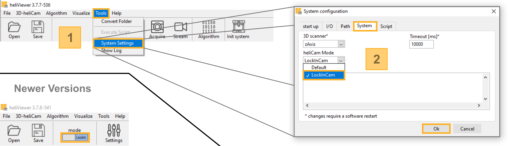
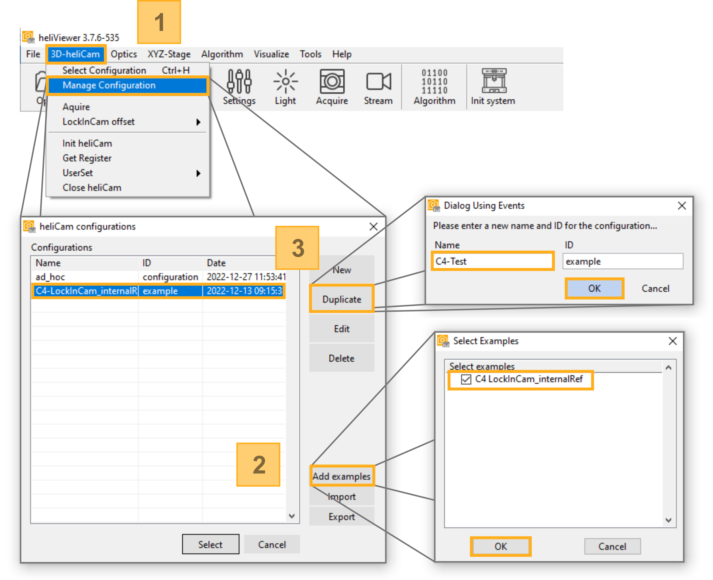
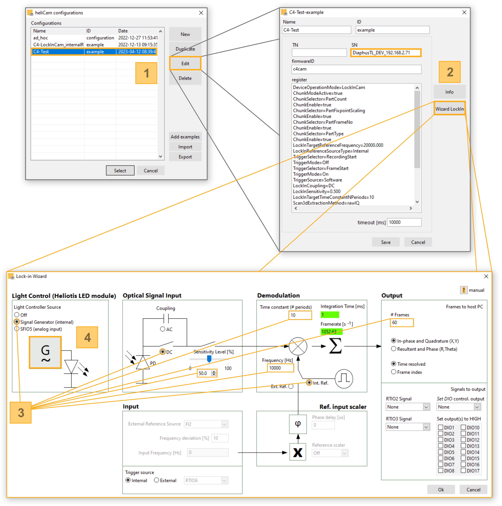
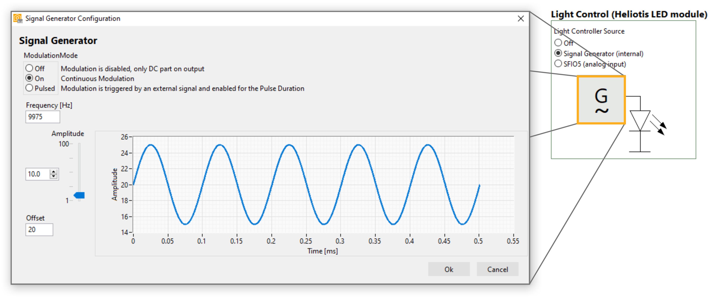
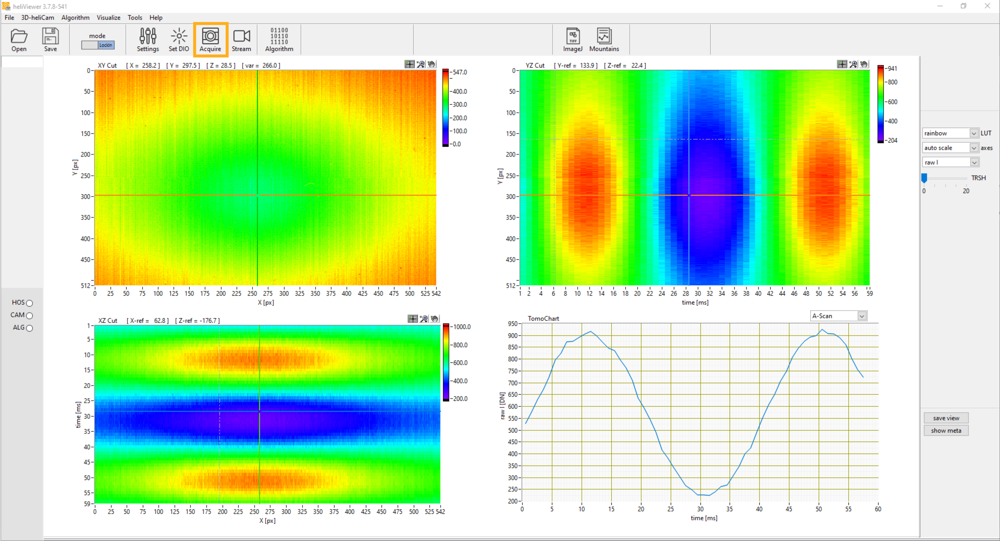
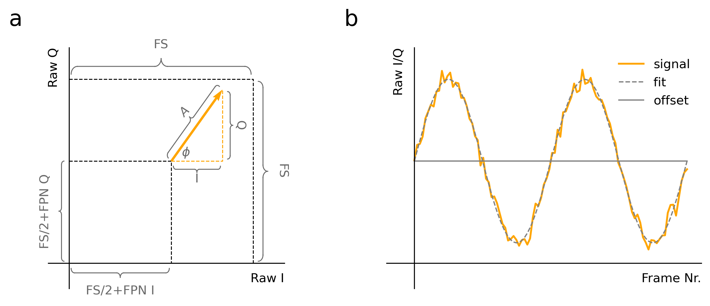
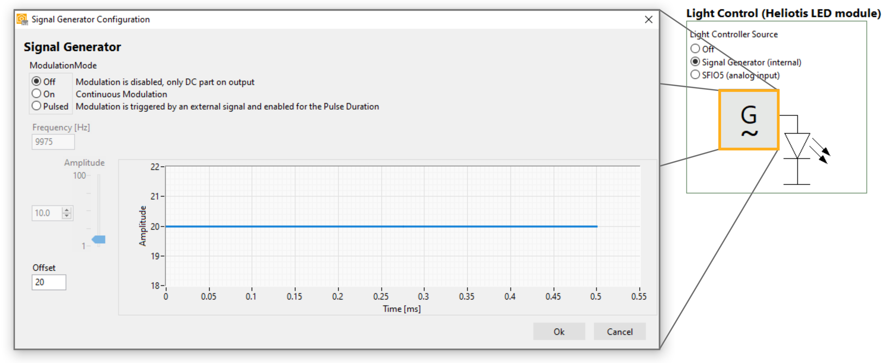
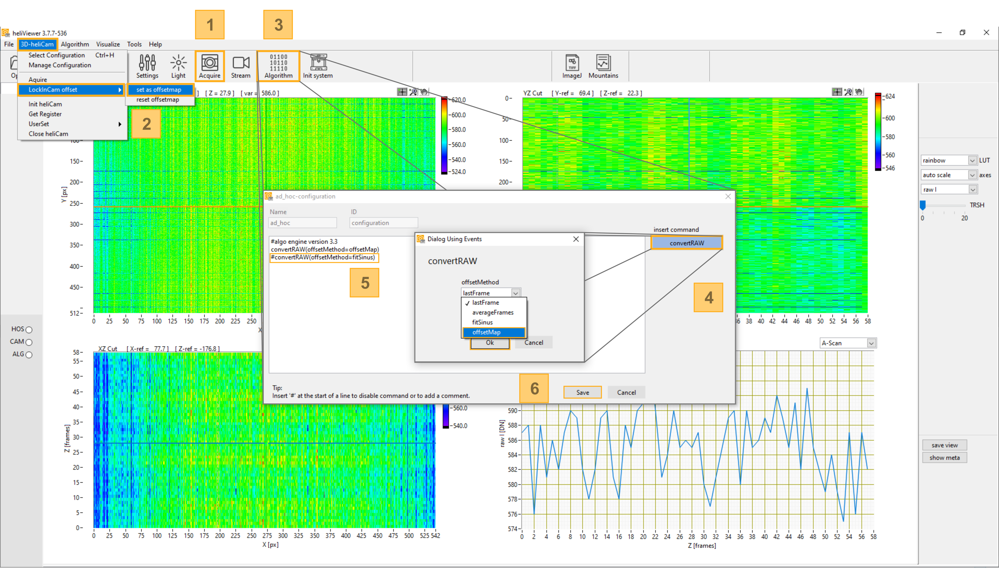
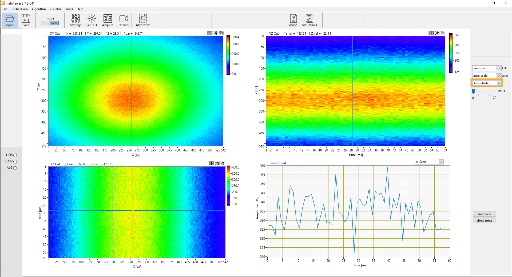
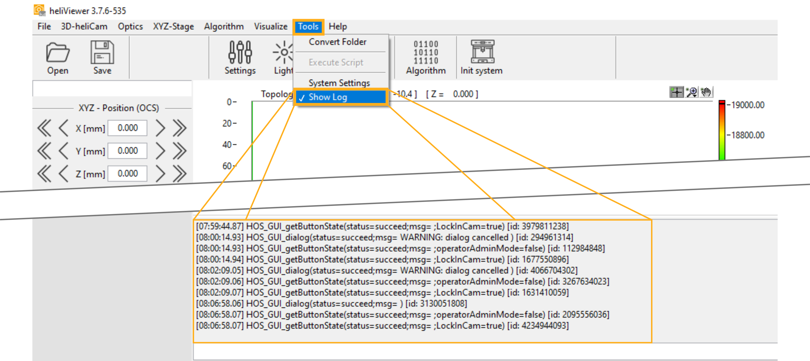

B) Get Started
The following section describes a simple starter experiment to test your setup and to get familiar with the heliCamTM C4 as well as the application software used for its control.
Outline of Starter Lock-In Measurement
The LED included in the standard shipment is used to produce a continuous, sinusoid optical signal with a well-controlled carrier frequency of ten kilohertz and constant modulation amplitude. The heliCamTM C4 can demodulate this input. We use a camera-internally generated reference signal with a slight frequency mismatch of a few ten Hertz compared to the carrier. As a result, a so-called sinusoid “beat” across the sequence of acquired frames is produced in the I and Q output components. For a detailed explanation of this phenomenon, which is mathematically related to its namesake in acoustics, the curious reader is referred to the paragraph Idealized Signal Processing in the next section.
Setup Preparation
To embark on the starter experiment, the hardware and software must be set up as described in the previous two chapters. Make sure that the LED Module shines through the heliCamTM C4’s sensor opening onto the image sensor, as shown in Fig. 6.
If you wish to follow the experiment step-by-step as it is described below, you will need to have downloaded and installed the heliViewer™ in addition to C4Utility.
Choice of Application Software
The starter experiment is readily realizable with two choices of software to operate the heliCamTM C4.
If you wish, you can learn how to control the heliCamTM C4 in a software development environment right from the start. Scripts in different programming languages named “c4DemodSimple” implement the starter experiment.
When interacting with the heliCamTM C4 via the C4 Handler Library (C4Hdl) from Heliotis, these examples are found in C4Utility’s dedicated C4Hdl folder (C: > Program Files > C4Utitlity > c4hdl > %os-folder% > examples).
If you use a third-party library to control the heliCamTM C4 through its generic camera interface directly, you find them with the general examples (C: > Program Files > C4Utitlity > examples).
There, you may also obtain the well-documented, interactive Jupyter Notebook “c4DemodAdvanced.ipynb”, verbally detailing the starter experiment and more advanced configuration options alongside Python code. It uses the freely available, user-friendly PyPI-package Harvesters to interface with the heliCamTM C4. More setup instructions are available in its “README.md” document.
Here on the other hand, we showcase how the GUI-based application software heliViewerTM can be employed to perform basic lock-in experiments. The heliViewerTM is well-suited for such standard tasks and first-time users might do well to use it for replicating the experiment before moving on.
For a complete overview of the possible software options to interact with the heliCamTM C4, see the previous section on integration options.
Using heliViewerTM
It is beyond the scope of this text to discuss all functionalities of heliViewerTM systematically or comprehensively. The aim here is rather that you learn about heliViewerTM ’s core features in passing as you see them applied in a step-by-step user guide for making a first measurement. That said, before undertaking the lock-in measurement, there are a few purely heliViewerTM-specific preparatory steps in the procedure.
Enable Lock-In Camera Mode
Heliotis devices other than the heliCamTM C4 can be controlled with the heliViewerTM. At first use, you need to specify explicitly that you operate a heliCamTM C4 (and not the interferometers heliInspectTM H8/H9 which the heliViewerTM ’s base settings support). To do so, open the heliViewerTM and set the device operation mode to “lockInCam” with the switch in toolbar. In older versions, this is achieved via the menu bar (Tools > System Settings > System) from “Default” to “LockInCam” and confirm your choice (see Fig. 15). The heliViewerTM layout will change to accommodate the operation of the heliCamTM C4. These settings are saved for the future.
{kind=link}

Fig. 15 Enabling the heliViewerTM ’s Lock-In Camera Mode
Create Measurement Recipe
The heliViewerTM offers the possibility to save specific camera configurations as measurement “recipes”. To make the starter experiment easily reproducible, we show here how to store the corresponding operating instructions for the heliCamTM C4 in this form.
Clicking on “3D-heliCam > Manage Configuration” opens a dialog box allowing you to manage your recipes. The simplest way to create a recipe for the experiment at hand is to start from the example “C4 LockInCam_internalRef”. Ideally, you duplicate it to work with the copy as shown in Fig. 16.
{kind=link}

Fig. 16 Loading and Duplicating Heliotis Example Recipe
Open the configuration manager using the menu bar (“3D-heliCam > Manage Configuration”).
Click on the “Add examples” button, select the example recipe “C4 LockInCam_internalRef” and confirm.
Select the new recipe, which should have appeared in the configuration manager, and press “Duplicate”. Give the copy a name and press “OK”.
Lock-In Camera Settings
By default, this example recipe does not yet configure all parameters according to the outlined experiment. It must be adapted slightly to introduce a small mismatch between the respective frequencies of the modulation carrier and the reference signal.
Lock-In Wizard
In the configuration manager, select your recipe by clicking on it. The menu to edit the recipe is then accessible via the corresponding button. (See Fig. 17, ditto for the following steps.) The recipe is thus shown as a list of heliCamTM C4 configurations, which can be manipulated directly. It is more straightforward, however, to use the dedicated graphical user interface “Lock-In Wizard” for this purpose.
{kind=link}

Fig. 17 Graphical User Interface for Configuration of Lock-In Camera
To alter an existing recipe, select it in the configuration manager and press “Edit”.
The opening window shows the list of its configuration commands. (If you changed the heliCamTM ’s IP address, make sure that it matches the one in the box “SN”.) Open the “Lock-In Wizard” with the corresponding button. It allows you to change the heliCamTM C4 ’s key settings interactively.
Where necessary, change the Lock-In Wizzard configurations according to Table 7. Note that the same settings are depicted in this figure except for the “Sensitivity Level”, which may differ depending on your camera version.
By clicking on the signal generator symbol, a separate dialog opens, enabling you to control the LED module.
Note
The “Settings” button in the toolbar gives you quick access to the same menu. In that case, however, any changes you make are saved to the to the “ad-hoc” configuration, which is also listed in the configuration manager, instead of the chosen recipe.
In the lock-in wizard’s main user interface, you can configure the principal lock-in amplification parameters. A set of valid parameters is proposed in see Table 7. Note that the adequate the camera exposure (Sensitivity) setting changes if you have a non-standard version of the heliCam™ C4’s in terms of pixel size, full well capacity, or equipment with micro lenses (see Table 1). In this way, one achieves an appropriate signal level and avoids saturation.
|
|||||||||||||||||||||||||||||||||||||||||||||
|
|||||||||||||||||||||||||||||||||||||||||||||
The signal generator driving the test illumination can be configured in a separate window, which opens when you click on its symbol in the block diagram, see Fig. 18. Replicate the settings in Table 7 / Fig. 18 manually, where they deviate from the default.
{kind=link}

Fig. 18 Signal Generator Configuration
Key Parameters
The heliCam™ C4 is primarily a research tool. It is used in diverse experimental settings and hence supports a wide range of applications. With this focus on general applicability comes a relatively large set of configuration and control options. Navigating this landscape is not trivial, especially for first-time users. In most applications, however, you only need a small subset of what is possible.
The “Lock-in Wizard” summarizes the heliCam™ C4‘s most important settings. Here, we briefly walk you through them even though you might not need to alter them for the starter experiment. Concepts and parameter names generalize largely beyond the heliViewer™ to software developing environments. Configurable lock-in camera parameters and selection options are highlighted in bold in the following.
A deeper understanding of this passage requires a familiarity with the basic concepts of lock-in amplification and, at times, with the specific implementation of the principle in the heliCam™ C4. If necessary, an extensive discussion can be found in section D) Advanced Concepts and Control.
Light Control
By means of the “Light Control” field, you can configure the illumination with the Heliotis LED module. The switch Light Controller Source lets you choose the source of the driving current to the LED module.
Signal Generator: The heliDriver™ D3 comprises an signal generator, which can be configured in a separate window, see Fig. 18. It produces a sinusoidal modulation signal whose characteristics like Frequency, Amplitude, and Offset you can control.
Furthermore, the internal signal generator features three principal Modulation Modes:
On: With this setting enabled, the signal generator produces a continuous output. This behavior is chosen in our starter experiment.
Off: The oscillating portion is disabled such that only a constant, non-zero Offset remains.
Pulsed: In the pulsed mode, the LED emits sinusoidal bursts. In between individual bursts, the illumination is constant and given by the Offset. Additional parameters govern the pulse characteristics.
The Pulse Duration of individual bursts can be set.
Trigger Source specifies the pin on the heliDriver™ D3’s communication interface, whose signal can be used to trigger the next burst. In ‘Auto’ mode, the trigger is generated automatically as soon as the set Pulse Duration and Trigger Delay allow it.
Trigger Activation specifies the flank of the trigger signal, which is detected.
Trigger Delay introduces a delay of the modulation burst with respect to the trigger event, which causes it.
Triggered modulation bursts can be subjected to a common Phase Shift.
Note
Please note that you specify (peak-to-peak) Amplitude and Offset as a percentage value of the full scale. Part of the signal will therefore be cropped if,
\[\mathbf{Offset} - \frac{\mathbf{Amplitude}}{2} < 0 \% \ \ \ \ \ or \ \ \ \ \ \mathbf{Offset} + \frac{\mathbf{Amplitude}}{2} > 100 \%\]
External: A signal from an external source is routed to the current source supply of the LED module. The default pin on the heliDriver™ D3’s communication interface to feed in the electrical input (0-5 V, e.g. sine wave) is SFIO 5, cf. the heliDriver™ D3 data sheet, Section Lock-In Amplifier Module.
Off: The driving current is disabled, the only software configuration that leaves the LED completely dark.
Coupling
The Coupling controls the activation of background subtraction. If it is set to AC, the potentially large DC component in the input is removed. Thus, the sensor’s full well capacity is available for integrating the modulated, AC component, without becoming saturated by DC light. The background is not suppressed, when the mode DC coupling is enabled. The background suppression affects the signal-to-noise ratio negatively and should therefore only be used when necessary. For more detailed information see the relevant paragraph on Background Suppression.
Sensitivity
The Sensitivity (level) controls the heliCam™ C4’s exposure. Roughly speaking, it determines the fraction of the measurement time during which the sensor light sensitive. A more technical explanation is given in the paragraph Processing in Pixel et seq.
Recording Start
You may also choose the trigger, which causes the camera to start a recording. (In the heliViewer™, this can be done via “Input > Trigger Source”)
Internal: A software command from the computer connected to the camera directly triggers the onset of a measurement.
External: An electric signal (rect pulse, 0-5 V) relayed to the heliCam™ C4 via a selectable pin on the heliDriver™ D3’s communication interface triggers the recording.
Reference Signal
The synthesis of the effective reference signal from configurable parameters and (possibly) a reference input signal is technically sophisticated and complex in its details. Here, you will be shown in a simplistic way how to choose parameter values. A comprehensive and mechanistic explanation can be found in paragraph Reference Signal Synthesis of section D) Advanced Concepts and Control.
The Reference Frequency (“Input > Frequency”) must be set to the frequency of the reference signal.
The heliCam™ C4 lock-in camera can derive the pace of demodulation from an internal or an external clock. Which mode is enabled depends on the Reference Input setting (configurable in lock-in wizard under “Input > Reference Input”):
Internal: The heliCam™ C4 synthesizes an effective dual-phase, pulse wave reference signal with a reference frequency as specified by the corresponding parameter.
External: An external reference input (rect wave, 0-5 V) is provided to the heliCam™ C4 via a pin on the heliDriver™ D3’s communication interface. As a first approximation, the injected pulse wave can be considered as the in-phase portion of the reference signal with which the optical input is mixed in lock-in amplification. In the external mode, additional parameters are used to configure and modify the reference input.
The Reference (Trigger) Source selects from which pin the reference input is drawn.
The Reference (Frequency) Scaler multiplies or divides the frequency of the reference input by a select factor. Its original frequency multiplied or divided by this factor must be equal to that of the carrier of the optical input signal.
The Phase Delay parameter specifies the delay of the reference trigger input introduced on the way to the image sensor.
The maximum (Expected) Frequency Deviation makes the measurement tolerant to unsteadiness of the reference input frequency up to the specified value in percent.
Note
Please note that the idea of considering the reference input directly as the reference signal has its limits. Attributes other than its frequency, such as amplitude, offset, and duty cycle are ignored. Also, you must specify the Reference Frequency parameter correctly even when you use an external reference input.
Time Constant
The Time Constant defines the number of periods over which the mixed signal is integrated into a frame. Thus, it serves a double role as the filter width and the sampling period. Increasing this parameter gives you a stronger signal and makes it more selective for the target reference frequency.
Frame Rate
A frame rate violation can occur with default settings if the following inequality is not satisfied.
, where \(f_{lim} = 4960\ Hz\) in the case of the heliCam™ C4 and \(f_{lim} = 1390\ Hz\) for the megapixel heliCam™ C4M.
Note
If the set frame rate is too high for the lock-in camera, it does not transfer measurement data. With conventionally accessible settings, the lock-in camera is not fully optimized to achieve high frame rates. A corresponding mode will become available with future software updates.
Measurement Data
Now ready to start the measurement, click “Acquire” in the toolbar and wait a few seconds. The heliCamTM C4 should acquire a three dimensional “data volume matrix”, i.e., a sequence of frames - 60 by default. Each frame can be thought of as an image with “complex pixel values”, whose real and complex parts part represent the I and Q components resulting from dual-phase lock-in amplification, respectively. The expected result is shown in Fig. 19. With baseline settings, the heliViewerTM exclusively displays sections through the “raw I volume”.
{kind=link}

Fig. 19 Expected Raw I/Q Result of Starter Lock-In Measurement
After completing the heliCamTM C4 ’ s configuration, press “Acquire” in the tool bar to take a measurement. HeliViewerTM will show the raw I component of your measurement. You should expect a similar result with a distinct sinusoid tendency across the series of acquired frames. The beat frequency, \(f_b\) is expected to coincide with the carrier/reference frequency mismatch, here 25 Hz. That this is so can be checked by estimating the beat period, \(T_b\). For the data presented in this manual, we have:
Fixed Pattern Noise
The raw I and Q measurement data is not centered at zero. For one, these data are offset by half the full scale of possible values, i.e., FS/2 = 1024/2. Additionally, they are affected by fixed pattern noise (FPN, see Fig. 20 a). This type of lateral noise is due to small differences in the offset of individual pixel units across the image sensor array. The pixel-specific offset it introduces depends on camera settings like the sensitivity and environmental parameters, such as the operation temperature but is otherwise constant.
Estimating Offset from Fit
In this experiment, the I/Q components of any single pixel are known in advance to vary sinusoidally with time. Each pixel’s individual offset, including the FPN component, can thus be estimated easily by fitting the expected time dependence function (see Fig. 20 b). In heliViewerTM, this option is available by default to convert raw I/Q values to offset-free I/Q values proper by subtraction.
{kind=link}

Fig. 20 Offset in Raw I/Q Measurement Data
Offset in single pixel
Offset removal by sinusoid fit
FS = Full Scale, FPN = Fixed Pattern Noise
Measuring Offset
More generally, the offset can be measured by illuminating the sensor with the DC part of the input alone, under the same experimental conditions otherwise.
The constant illumination component should be kept on when evaluating the offset, because said offset also depends on the total amount of incoming light the pixel is exposed to. That is because the DC attenuation factor inherent to the lock-in principle is finite and the constant part is often much larger than the time dependent one.
In the case at hand, you can set the Modulation Mode to “Off” (see Fig. 21) to disable the illumination’s AC part.
{kind=link}

Fig. 21 Signal Generator Setting for Offset Measurement
To measure the offset, set the signal generator’s Modulation Mode to “Off” in the lock-in wizard (Settings > Lock-In Wizard). Do not forget to turn it back on after having recorded the offset.
Trigger another acquisition afterwards. In the heliViewerTM, such background data can be saved as an “offset map”, according to which the offset can be removed automatically in subsequent measurements (for step-by-step instructions, see Fig. 22).
Conversion to Polar Coordinates
It is especially important to remove the offset, \(I_{0}\) and \(Q_{0}\), from the raw measurement results \(I_{raw}\) and \(Q_{raw}\) before you convert to polar coordinates (see heliViewerTM example in Fig. 23), so that you obtain correct values for amplitude \(A\) and phase \(\varphi\).
, where \({I\ = I}_{raw} - I_{0}\) and \({Q\ = Q}_{raw} - Q_{0}\).
{kind=link}

Fig. 22 Offset Measurement and Subtraction
After setting the carrier amplitude to zero, make a measurement of the offset.
Set the recorded data as “offset map”.
Open the “Algorithm” dialogue box.
Add a new algorithm command that uses the offset map to convert raw data.
Remove/comment the default conversion method based on a sinusoid fit function.
Confirm your changes.
{kind=link}

Fig. 23 Expected Amplitude Result of Starter Lock-In Measurement
The conversion to polar coordinates, either with offsets from the default sine fit or a set offset map, is seamless in the heliViewerTM. Simply choose in which form you wish to display the results on the right-hand side of the heliViewerTM. You may also show phase or offset-corrected I/Q values via the same menu.
Trouble Shooting
We encourage you to get in touch with Heliotis support without hesitation in case you face difficulties with the starter experiment. Error analysis is difficult without further clues, however. Here are a few hints for collecting indications about the source of the problem, debugging common issues, and getting effective help.
No Data Received:
Power Cycle: If you do not get any data after launching an acquisition, switch the power supply to the heliCamTM C4 off and on again and proceed by Checking the Software Setup as described previously before you try once more.
Enabling heliViewer™ Log: The heliViewerTM can display a log with status messages (see Fig. 24). They can often point you to the source of the issue. Please include a copy of the heliViewerTM log when you work with the heliViewerTM and contact Heliotis for support.
{kind=link}

Fig. 24 heliViewerTM Log
Deviating Results:
Potential Causes: Various issues can make your starter experiment results differ from the data presented in this manual.
Example: It is common that you run into saturation issues - especially if you have an image sensor which features a signal enhancing micro-lens array. Saturation manifests itself in cropped I and Q signals when they exceed the full scale or, in severe cases with large DC input components, even flat signals (cf. Background Suppression).
\(\Rightarrow\) Reduce the signal generator Amplitude, the Sensitivity (level) / enable the background suppression by setting the Coupling to AC in the Lock-In Wizard.
Sharing Data: If you wish to consult the Heliotis support team with regards to your data, consider sharing them in the “.hdat” -format (heliViewerTM menu bar > file > Save Measurement) via file transfer. In this form, your heliCamTM C4 settings are saved alongside as metadata, which helps Heliotis considerably.